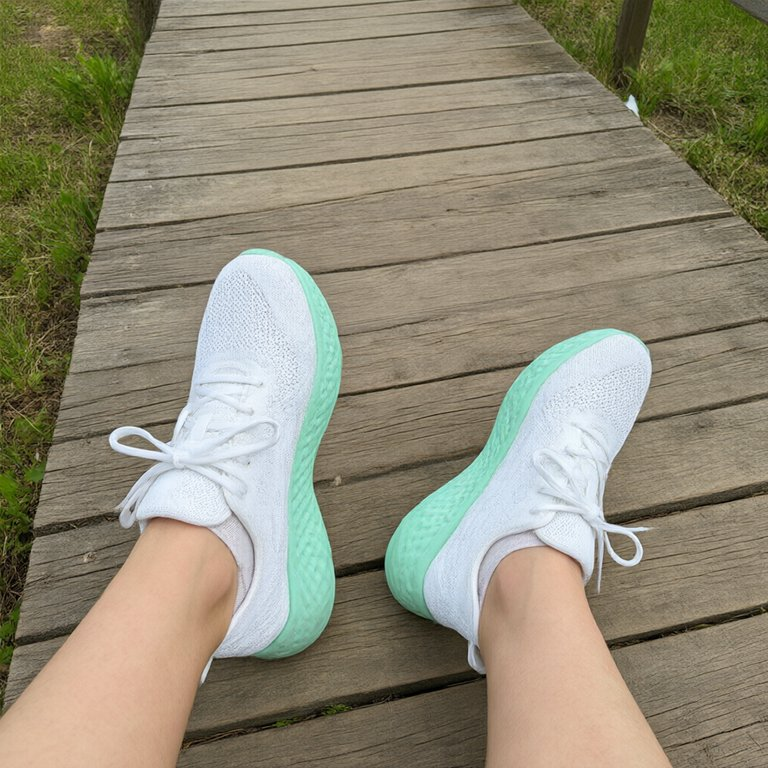
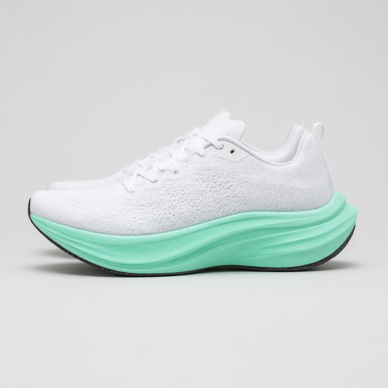
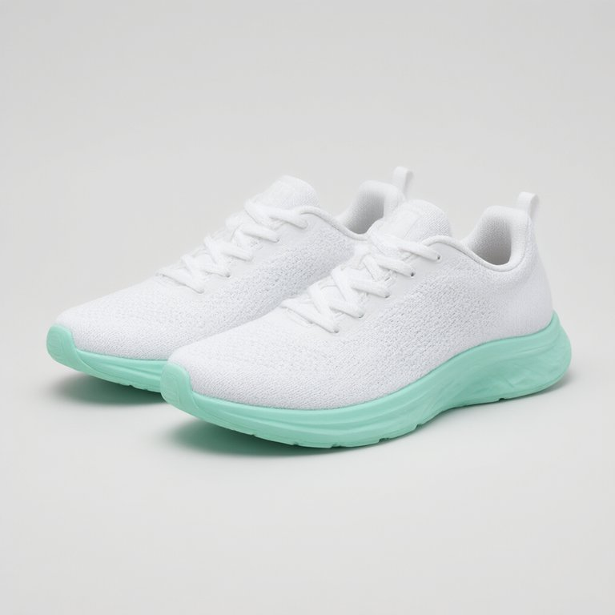

Long-term multimodal memory for LLM agents
105,943 input tokens per question (LongMemEval)
Budget: under $120 in August, $180 by September
Deleting one fact means finding every copy of it
calls a search tool when it thinks it needs one
decides before the LLM is called, and never calls one itself
Your budget has gone up $60, from under $120 to a max of $180f2f8.

Found them: that's Lena's white knit / mint-sole lookf3. Two matches keep it almost exactly:


I'd skip the Tempo Leather Trainer ($95): it's full-grain leather.
I don't have that: your sister's birthday has never come up in our chats, so I can't tell you the date.
Aug 28 · the pair Lena wears
Replies are real outputs of the CueMem demo (qwen3.8-flash), shortened; the interface is redrawn for video.
“…shoes that look like the pair I showed you in August?”
one cheap retrieval pass,
54 features, no LLM
gate + question-type model,
trained on dev sets
answers with what
was recalled
how much one extra correct answer is worth; a larger λ saves more
vs always retrieving, with no loss in accuracy
vs always deep recall: a limit, reported as one
Full context sends the whole chat history, about 106K tokens per question, to the model.
github.com/FlickYan/cuemem
Code · technical report · every number